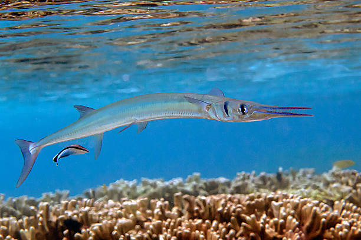

La Aguja de mar es un pez marino alargado que pertenece a la misma familia que los caballitos de mar..

• Cuerpo largo y delgado. • Hocico largo y tubular. • Puede medir entre 20 y 40 cm. • Vive en aguas costeras y arrecifes. • Se alimenta de pequeños crustáceos y peces.
La aguja de mar tiene un cuerpo muy delgado que le permite camuflarse entre plantas marinas para evitar depredadores.